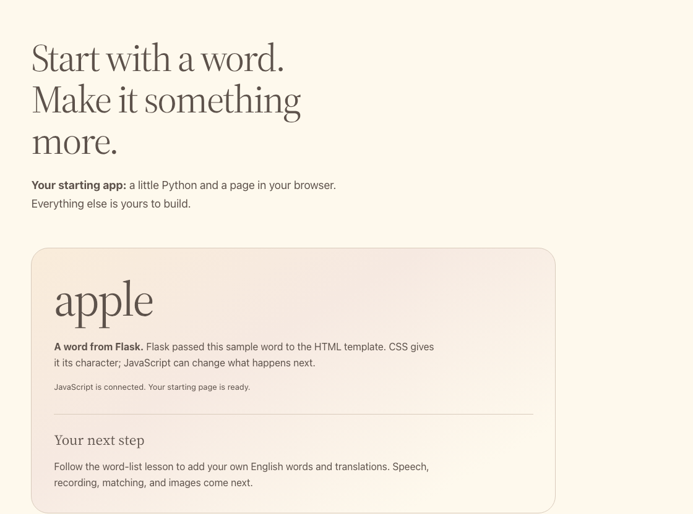

Open your app¶
Run the starter and see how Flask, HTML, CSS, and JavaScript produce the page. Complete setup first.
Run¶
From the repository root on main:
Open Your app — 5050 from Ports > Open in Browser. You should see
apple and “JavaScript is connected.”
To compare with the finished app, run this in a second terminal:
Edit starter/; use solution/ as a reference.
| File | Role |
|---|---|
app.py |
Flask routes and model requests. |
templates/index.html |
Page structure and controls. |
static/app.js |
Browser interactions and state. |
static/style.css |
Appearance; keep the supplied styles. |
Flask passes the word into the template. The browser loads CSS for styling and JavaScript for interactions.
Check: reload and inspect Network: GET /, /static/style.css, and
/static/app.js.

For every lesson: save first. After Python/HTML edits, stop Flask with
Ctrl+C, rerun its command, and reload. JS/CSS edits need a browser reload only.
Try one¶
- Change
sample_word="apple"to"river"instarter/app.py. Restart and reload: the word changes, but the JavaScript message does not. - Change the status string in
starter/static/app.js. Reload: only the message changes.